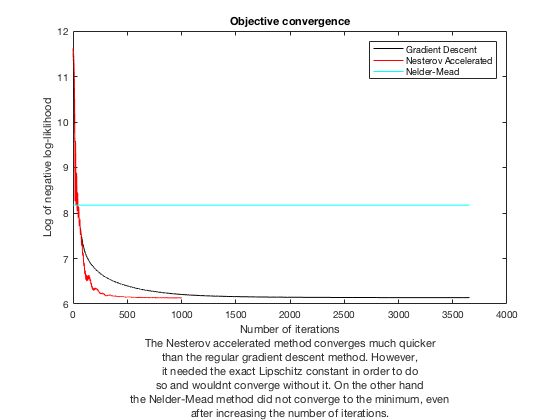

Liam Madden
Homework 8 Problem 1
Contents
Abstract
We compare the gradient descent method from last week to the Nesterov accelerated method and to the Nedler-Mead, gradient-free, method. The Nesterov accelerated method converges much faster than the regular gradient descent method when it is given the right Lipshitcz constant. Without the right Lipschitz constant, the method doesn't even converge, instead oscillating around. The Nedler-Mead method, on the other hand, doesn't converge either without taking far too long. While the Nedler-Mead method is sure to converge eventually, it is slow, and while the Nesterov accelerated method is fast, it won't converge without the Liptschitz constant. Thus, both methods have their drawbacks.
Clear
clear all close all
Load
load('spamData.mat')
Format
Xtrain = log(Xtrain+0.1); Xtest = log(Xtest+0.1); ytrain = 2*ytrain-1; ytest = 2*ytest-1;
Indices
p = length(Xtrain(1,:)); ntrain = length(Xtrain(:,1)); ntest = length(Xtest(:,1));
Objective function (negative log-likelihood)
sigma = @(a) 1./(1+exp(-a)); muTrain = @(w) sigma(ytrain.*(Xtrain*w)); lTrain = @(w) -sum(log(muTrain(w))); gradlTrain = @(w) -Xtrain'*(ytrain.*(1-muTrain(w))); w0 = ones(p,1); [h,test1,test2] = gradCheck(lTrain,gradlTrain,w0);
Training
tol = .001; w = gradDesc(w0,lTrain,gradlTrain,tol,10000,0,1);
Nesterov
wn = accelNest(w0,lTrain,gradlTrain,tol,10000,1.8703e5,0);
fminsearch
options.MaxFunEvals = 1e8; options.MaxIter = 1e8; w_fms = fminsearch(lTrain,w0,options);
Plot
iter = [1:length(w(1,:))]'; itern = [1:length(wn(1,:))]'; figure(1) plot(iter,log(lTrain(w(:,iter))),'-k',itern,log(lTrain(wn(:,itern))),'-r',iter,log(lTrain(w_fms))*ones(length(iter)),'-c') xlabel({'Number of iterations','The Nesterov accelerated method converges much quicker','than the regular gradient descent method. However,','it needed the exact Lipschitz constant in order to do','so and wouldnt converge without it. On the other hand','the Nelder-Mead method did not converge to the minimum, even','after increasing the number of iterations.'}) ylabel('Log of negative log-liklihood') legend('Gradient Descent','Nesterov Accelerated','Nelder-Mead') title('Objective convergence')